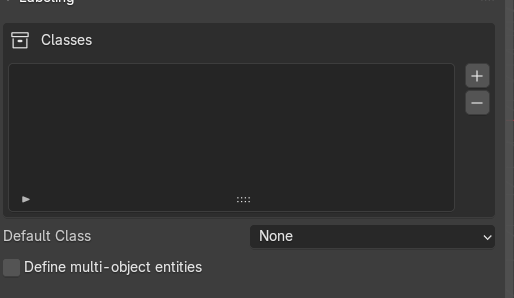
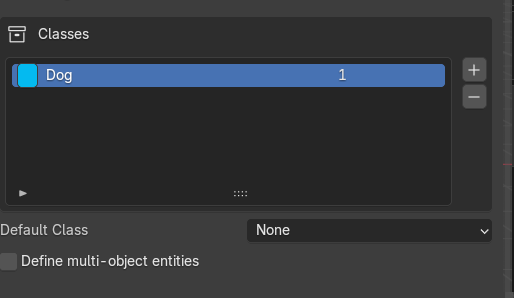
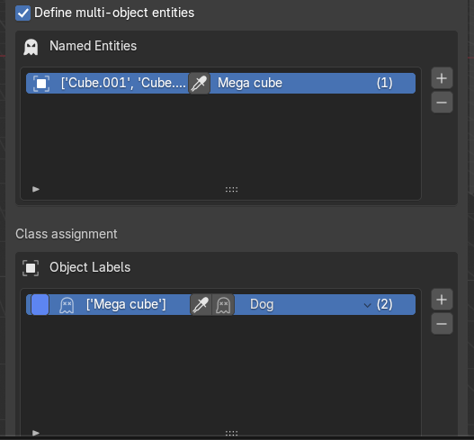
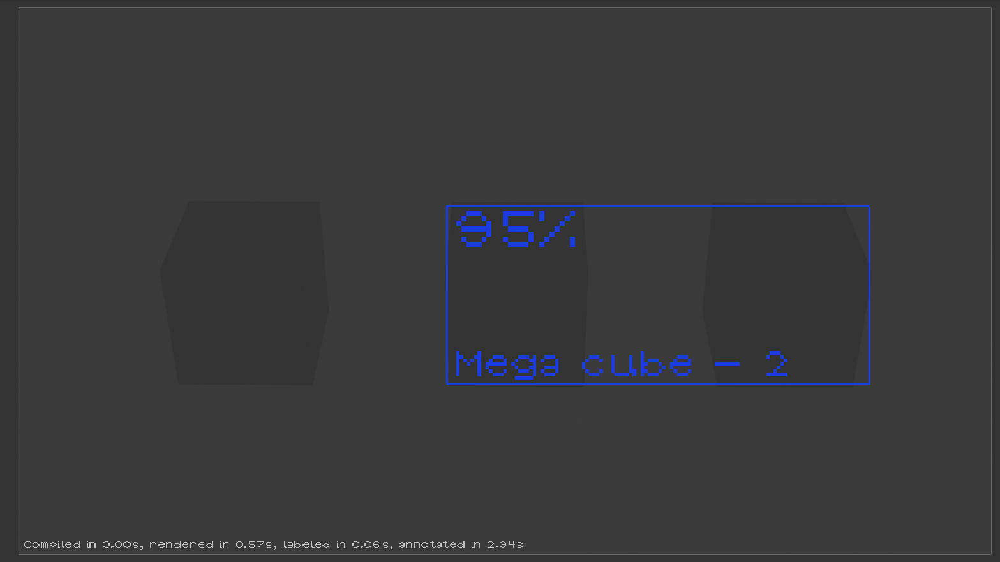
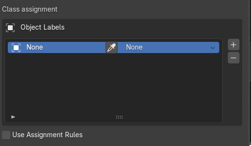
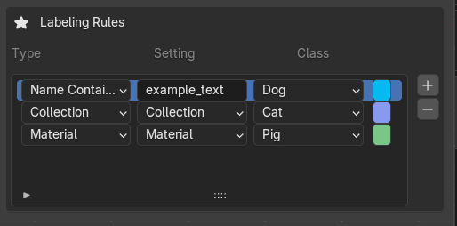
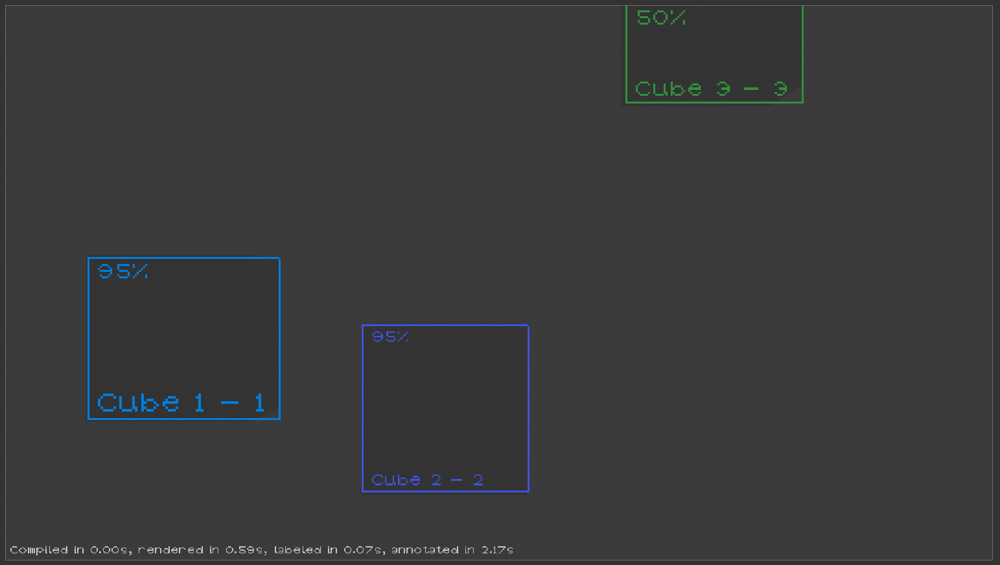

Tutorial: Classes, Entities, and Object Classification
Overview
In this tutorial, you'll learn how to set up a complete labeling workflow for synthetic data generation: - Create test objects in your Blender scene - Define custom classes for object categorization - Organize objects into multi-object entities (optional) - Assign classes to objects using manual rules and automated matching - Preview the generated labels and bounding boxes
Prerequisites
- Blender 3.0+ with the extension installed
- Basic familiarity with Blender's viewport and UI If one isn't familiar with the Blender basics, a good tutorial can be found at https://www.blenderguru.com/
Section 1: Creating Test Objects in the Scene
Step 1.1: Set Up Your Scene
- Open Blender and create a new General project
- Delete the default cube (if present): Select it and press X → Delete
- You now have an empty scene ready for setup
Step 1.2: Add Three Cubes
- Add the first cube:
- Press Shift+A → Mesh → Cube
- In the top-left, confirm placement with default settings
- Press G to grab/move it along the X-axis (press X, then type -3, then Enter)
-
Rename it in the Outliner to
dog(double-click the name) -
Add the second cube:
- Press Shift+A → Mesh → Cube
- Press G, then X, then 0, then Enter (place at origin)
-
Rename to
pig -
Add the third cube:
- Press Shift+A → Mesh → Cube
- Press G, then X, then 3, then Enter
- Rename to
cat
Result: Your scene now has three cubes arranged along the X-axis with distinct names. You can now move the camera around and press Numpad 0 to inspect the current camera view. This is important: the preview will use the default scene camera.
Step 1.3: (Optional) Add Materials to Differentiate Objects
To prepare for rule-based classification in Section 4, you can assign materials:
- Select each of the three cubes
- In the Shader Editor (or Material Properties panel), create a new material and pick a different color from the palette
This will be useful when we set up material-based classification rules later.
Section 2: Creating and Managing Classes
Step 2.1: Open the Labeling Panel

1. In Blender, locate the Labeling panel (usually in the Properties sidebar on the right) 2. Find the Classes section 3. You should see an empty list of classesStep 2.2: Create Your First Class

1. Click the + button to add a new class 2. A new class entry appears with default values: - Name: (editable text field) - Color: (color picker) - ID: (numeric identifier)- Set up the first class:
- Change the name to
Dog - Click the color swatch and choose a brown/tan color (if you want)
- Set ID to
0(or leave as auto-assigned)
Step 2.3: Create Additional Classes
Repeat Step 2.2 to create two more classes:
- Class 2:
- Name:
Cat - Color: Gray or silver (if you want)
-
ID:
1 -
Class 3:
- Name:
Pig - Color: Bright blue or similar (if you want)
- ID:
2
Step 2.4: Customize a Class (Optional)
- Select a class
- You can change its color by clicking the color swatch
- You can change its ID by clicking the ID field and typing a new number
- Press away or Enter to confirm
Note: You can delete a class by clicking the – button, but ensure there are no "dangling" class references.
Section 3: Creating Multi-Object Entities
What Are Entities?
An entity is a logical grouping of multiple Blender objects that represent a single conceptual object. For example: - A human character made of: body mesh + clothes mesh + shoes mesh → single "human" entity - A car made of: body + wheels + windows → single "car" entity
Step 3.1: Create an Entity (Optional)

In this tutorial, we'll create a simple entity grouping two of our cubes: Firstly, we must enable the entity creation by checking the "Define multi-object entities" checkbox. Then: 1. Open the Entities section in the Labeling panel (below Classes) 2. Click the + button to add a new entity 3. Name itMega Cube
Step 3.2: Assign Objects to an Entity
- In the new entity row you should see an eyedropper icon. This icon is a button that allows to select currently selected objects in the scene.
- Select the two sub-cubes and then click the eyedropper icon.
Result: You've created an entity containing two cubes. These objects can now be classified together as a single entity, or individually as separate objects.

Step 3.3: Understanding Object + Entity Classification
An important feature: objects can belong to an entity AND have individual classifications.
For example:
- Assign Collective the class Pig (representing the whole composite)
- Assign to one of the sub-cubes the class Dog (detecting it individually)
- Both labels will be generated in the output
This is useful for hierarchical detection tasks.
Section 4: Assigning Classes to Objects
There are two approaches to assign classes: direct assignment and rule-based assignment.
Approach A: Direct Assignment

Step 4.1: Open the Class Assignment Panel
- In the Labeling panel, locate the Class Assignment section
- You should see fields for:
- Object/Entity Selection
- Assigned Class
Step 4.2: Manually Assign a Class
- Click Create New Assignment
- In the Object field, click to select a cube from the scene or dropdown
- In the Class field, select
Pigfrom the class list - Click Confirm or press Enter
Result: The cube is now directly assigned to the Pig class.
Step 4.3: Assign the Remaining Objects
You are free to assign the remaining object any way you wish.
Approach B: Rule-Based Assignment

Rules allow the system to automatically classify objects based on properties without manual assignment. You can use multiple rules simultaneously.Step 4.4: Open the Rules Section
- In the Labeling panel, find the Classification Rules section
- You should see buttons for different rule types: Material, Name, Collection
Step 4.5: Create a Material-Based Rule
This rule classifies objects by the materials they have:
- Click + Add Material Rule
- A new rule entry appears with:
- Material Name: (text field)
-
Target Class: (dropdown)
-
Fill in the rule:
- Material Name: Create a new material
Classifier, and assign it to some cube. - Target Class:
Pig - Click Confirm
Effect: Any object in the scene with the Classifier will automatically be classified as Pig.
Step 4.6: Create a Name-Based Rule
This rule classifies objects by substring matching in their names:
- Click + Add Name Rule
- Fill in:
- Substring: A substring which will be contained in the object's name
- Target Class:
Dog - Click Confirm
Effect: Any object with the substring in its name will be classified as Dog.
Step 4.7: Create a Collection-Based Rule
If you've organized objects into Blender collections, you can classify all objects in a collection:
- In the Outliner (left side), create a new collection named
New collection - Move a cube into this collection
- In the Labeling panel, click + Add Collection Rule
- Fill in:
- Collection Name:
New collection - Target Class:
Dog - Click Confirm
Effect: All objects in the New collection collection are classified as Dog.
Step 4.8: Rule Priority and Conflicts
If an object matches multiple rules, the extension uses this priority: 1. Direct assignments (highest priority) 2. Material rules 3. Name rules 4. Collection rules (lowest priority)
Section 5: Previewing Labels and Bounding Boxes
Step 5.1: Locate the Preview Button
- In the Labeling panel, find the Generator section
- Look for the Preview button, typically represented by an eye icon (👁)
Step 5.2: Activate the Preview

1. Click the eye icon button 2. The viewport will update to show: - Bounding boxes around labeled objects (if bbox is your labeling type) - Color overlays matching your class colors - Visibility estimates (opacity or transparency levels) - Object labels with class names and IDs - Statistics related to timing -Step 5.4: Debug Your Setup
If an object doesn't appear in the preview: - Check that it has a class assigned (either direct or via a rule) - Ensure it's visible in the viewport (not hidden or on a hidden layer) - Check the camera view—the object may be outside the camera's frustum
Step 5.5: Adjust and Re-Preview
- Modify class assignments, add/remove rules, or move objects in the scene
- Click the eye icon again to refresh the preview
- Iterate until you're satisfied with the labeling
Common Tasks & Troubleshooting
Task: Rename a Class After Assignment
- In the Classes section, click on a class to select it
- Change its name in the text field
- Press Enter to confirm
- All assignments referencing that class will automatically update
Task: Remove an Object from an Entity
- Select the entity in the Entities section
- Find the sub-object list and click the – button next to the object
- The object remains in the scene but is no longer part of the entity
Troubleshooting: Object Not Appearing in Preview
- Check visibility: Is the object visible in the viewport? (Check outliner icons)
- Check camera: Is the object within the camera's view? (Use Numpad 0 to enter camera view)
- Check assignment: Does the object have a class? Add a direct assignment if rules aren't matching
- Check labeling type: Is the preview set to show the same labeling type as your objects? (e.g., bounding box vs. polygon)
Troubleshooting: Rule Not Matching Objects
- Material rule: Verify the exact material name (case-sensitive). Select the object and check the Shader Editor
- Name rule: The substring must match. For
cube_plastic, substringplasticworks;Plastic(capital P) may not - Collection rule: Ensure the object is actually in the collection (drag it in the Outliner)
Next Steps
Now that you've created classes and assigned them to objects, you can:
- Generate synthetic data: Use the Render button to create labeled images and annotations
- Configure output format: Choose between YOLO, COCO, or other formats in the extension settings
- Add randomization: Vary materials, lighting, and camera angles for diverse datasets
- Scale up: Add more objects, use collection-based rules for larger scenes
--
Summary
You've learned how to: - ✓ Create test objects in Blender - ✓ Define custom classes with colors and IDs - ✓ Create multi-object entities (optional feature) - ✓ Assign classes via direct assignment - ✓ Assign classes via material, name, and collection rules - ✓ Preview labeled objects and bounding boxes